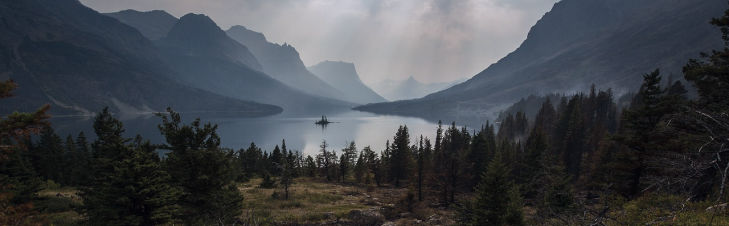
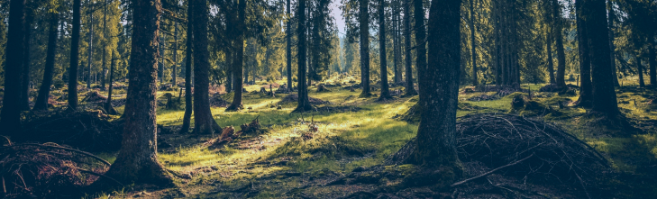

Bienvenue en Irlande
Tous ceux qui ont eu l’occasion de visiter l’Irlande le savent :
les Irlandais cultivent naturellement le plaisir de l’accueil.
Avec l’enrichissement rapide de ces dernières décennies, les mentalités ont un peu
changé.
Heureusement, le cœur de l’Irlande bat encore. Ce n’est pas en voyageant de ville en
ville que vous le découvrirez : il faudra parcourir les recoins de l’île, visiter les villages
cachés et les péninsules sauvages, pour trouver, au détour d’un Gaeltacht (zone où l’on
parle la langue gaélique), la vraie chaleur humaine de la verte Érin. Autrement dit, partez
en classe verte ! Et suivez, par exemple, la « nouvelle » Wild Atlantic Way, de Kinsale à la
péninsule d’Inishowen (Donegal), la plus longue route côtière au monde (environ 2 500
km !).
Si l'Irlande est restée aussi humaine, c’est sans doute parce qu’elle a beaucoup souffert autrefois. Ce pays magnifique, où les paysages ressemblent à des gravures romantiques du XIXe siècle, est peuplé de fantômes. Vous serez confronté à ce passé toujours présent dès le premier pub, à la première chanson.
C’est cela, l’Irlande d’aujourd’hui : une économie libérale qui se remet d'une grave crise
après avoir été florissante, un pays jeune (25 % des habitants ont moins de 15 ans) et
moderne.
Si la mentalité, autrefois très conservatrice, s’est assouplie, l’Irlande reste un pays de
valeurs fortes, de contrastes, voire de contradictions. Le soleil brille à travers la pluie,
les ballades tristes débouchent sur des gigues déchaînées... C'est un peu de soi-même
qu’on laisse en Irlande... Car, peu importe sa patrie, l’Irlande est celle du cœur.

Topographie et hydrographie :
La morphologie de l'île comprend une plaine centrale entourée de montagnes et de
collines, particulièrement dans le Donegal et le Wicklow.
Mais les sommets les plus hauts se trouvent au sud-ouest avec les Macgillycuddy's
Reeks qui comprend le point culminant du pays, le Carrauntuohil avec ses 1 038
mètres.
Climat :
Le climat est de type tempéré océanique, ou Cfb selon le système de classification de climat de Köppen. Les étés sont généralement doux, la température ne dépassant que très rarement les 25 °C. Les hivers sont frais et pluvieux. Les températures minimales ne descendent qu'exceptionnellement en dessous de 0 °C.

Tourisme :
Tous les comtés du pays ont su développer leur infrastructure afin d'attirer les touristes du monde entier. Le pays offre ainsi de nombreuses activités, telles que la pêche, l'équitation, le golf, la randonnée pédestre… afin de découvrir les richesses du pays.
- Connemara
- Îles d'Aran
- Comté de Kerry
- Dublin
Les premiers occupants de l'Irlande sont arrivés sur l'île environ au 9e millénaire av. J.‑C.. Ensuite sont venues des peuplades mégalithiques, puis néolithiques, qui ont développé l'agriculture et l'élevage.